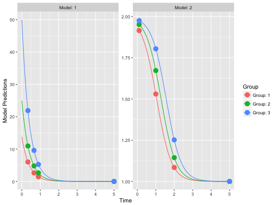

This is a structural model function that encodes the model described above.
The function is suitable for input to the create.poped.database function using the
ff_file argument.
ff.PKPD.1.comp.sd.CL.emax(model_switch, xt, parameters, poped.db)
xt, identifying which model
response should be computed for the
corresponding xt value. Used for multiple response models.A list consisting of:
Other models: feps.add.prop,
feps.add, feps.prop,
ff.PK.1.comp.oral.md.CL,
ff.PK.1.comp.oral.md.KE,
ff.PK.1.comp.oral.sd.CL,
ff.PK.1.comp.oral.sd.KE,
ff.PKPD.1.comp.oral.md.CL.imax
Other structural_models: ff.PK.1.comp.oral.md.CL,
ff.PK.1.comp.oral.md.KE,
ff.PK.1.comp.oral.sd.CL,
ff.PK.1.comp.oral.sd.KE,
ff.PKPD.1.comp.oral.md.CL.imax
library(PopED) ## find the parameters that are needed to define from the structural model ff.PKPD.1.comp.sd.CL.emax#> function(model_switch,xt,parameters,poped.db){ #> with(as.list(parameters),{ #> y=xt #> MS <- model_switch #> #> # PK model #> CONC = DOSE/V*exp(-CL/V*xt) #> #> # PD model #> EFF = E0 + CONC*EMAX/(EC50 + CONC) #> #> y[MS==1] = CONC[MS==1] #> y[MS==2] = EFF[MS==2] #> #> return(list( y= y,poped.db=poped.db)) #> }) #> } #> <environment: namespace:PopED>## -- parameter definition function ## -- names match parameters in function ff sfg <- function(x,a,bpop,b,bocc){ ## -- parameter definition function parameters=c( CL=bpop[1]*exp(b[1]) , V=bpop[2]*exp(b[2]) , E0=bpop[3]*exp(b[3]) , EMAX=bpop[4]*exp(b[4]) , EC50=bpop[5]*exp(b[5]) , DOSE=a[1] ) return( parameters ) } feps <- function(model_switch,xt,parameters,epsi,poped.db){ ## -- Residual Error function ## -- Proportional PK + additive PD returnArgs <- do.call(poped.db$model$ff_pointer,list(model_switch,xt,parameters,poped.db)) y <- returnArgs[[1]] poped.db <- returnArgs[[2]] MS <- model_switch prop.err <- y*(1+epsi[,1]) add.err <- y+epsi[,2] y[MS==1] = prop.err[MS==1] y[MS==2] = add.err[MS==2] return(list( y= y,poped.db =poped.db )) } ## -- Define initial design and design space poped.db <- create.poped.database(ff_fun=ff.PKPD.1.comp.sd.CL.emax, fError_fun=feps, fg_fun=sfg, groupsize=20, m=3, sigma=diag(c(0.15,0.15)), bpop=c(CL=0.5,V=0.2,E0=1,EMAX=1,EC50=1), d=c(CL=0.01,V=0.01,E0=0.01,EMAX=0.01,EC50=0.01), xt=c( 0.33,0.66,0.9,5,0.1,1,2,5), model_switch=c( 1,1,1,1,2,2,2,2), minxt=0, maxxt=5, a=rbind(2.75,5,10), bUseGrouped_xt=1, maxa=10, mina=0.1) ## create plot of model without variability plot_model_prediction(poped.db,facet_scales="free")#> [,1] [,2] [,3] [,4] [,5] [,6] #> [1,] 13423.83149 -26148.43437 -104.9746 -55.87794 20.58619 0.000000 #> [2,] -26148.43437 70314.08831 -137.2793 -103.59890 26.32348 0.000000 #> [3,] -104.97460 -137.27932 1209.7986 516.06655 -116.00915 0.000000 #> [4,] -55.87794 -103.59890 516.0666 449.35861 -62.47406 0.000000 #> [5,] 20.58619 26.32348 -116.0092 -62.47406 22.73598 0.000000 #> [6,] 0.00000 0.00000 0.0000 0.00000 0.00000 80801.896051 #> [7,] 0.00000 0.00000 0.0000 0.00000 0.00000 33813.087593 #> [8,] 0.00000 0.00000 0.0000 0.00000 0.00000 -149.076472 #> [9,] 0.00000 0.00000 0.0000 0.00000 0.00000 -12.036361 #> [10,] 0.00000 0.00000 0.0000 0.00000 0.00000 -6.036774 #> [11,] 0.00000 0.00000 0.0000 0.00000 0.00000 -490.056475 #> [12,] 0.00000 0.00000 0.0000 0.00000 0.00000 -124.365676 #> [,7] [,8] [,9] [,10] [,11] [,12] #> [1,] 0.00000 0.00000 0.000000 0.000000 0.000000 0.00000 #> [2,] 0.00000 0.00000 0.000000 0.000000 0.000000 0.00000 #> [3,] 0.00000 0.00000 0.000000 0.000000 0.000000 0.00000 #> [4,] 0.00000 0.00000 0.000000 0.000000 0.000000 0.00000 #> [5,] 0.00000 0.00000 0.000000 0.000000 0.000000 0.00000 #> [6,] 33813.08763 -149.07647 -12.036362 -6.036774 -490.056480 -124.36567 #> [7,] 24805.50195 -298.98117 -29.291533 -12.043738 -1673.201628 -240.18988 #> [8,] -298.98117 12195.30283 2243.466316 112.240359 -16.313945 3053.55567 #> [9,] -29.29153 2243.46632 1714.449506 32.628593 -1.699652 1230.31396 #> [10,] -12.04374 112.24036 32.628593 4.333281 -0.657264 65.47791 #> [11,] -1673.20163 -16.31394 -1.699652 -0.657264 3613.617857 -13.16083 #> [12,] -240.18988 3053.55567 1230.313963 65.477910 -13.160827 4657.16918det(FIM)#> [1] 3.728201e+38#> bpop[1] bpop[2] bpop[3] bpop[4] bpop[5] D[1,1] #> 3.306524 3.610227 4.575451 6.825531 30.397923 54.423606 #> D[2,2] D[3,3] D[4,4] D[5,5] SIGMA[1,1] SIGMA[2,2] #> 99.833074 113.036586 291.596910 5861.168062 11.420976 11.706427